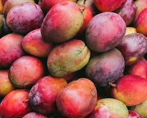

Nitrogenous Fertilizers mineral and
organic substances used as a source
of nitrogen nutrition for plants. They are
divided into organic fertilizers (manure, peat, compost)
containing other nutrients besides nitrogen; manufactured mineral
fertilizers; and green fertilizers.The nitrogenous fertilizer industry
includes the production of synthetic ammonia, nitric acid, ammonium nitrate,
and urea. Synthetic ammonia and nitric acid are used primarily as intermediates
in the production of ammonium nitrate and urea fertilizers.
Price : 10$ per ton
Banana
Bananas are one of the most popular fruits worldwide. Bananas are one of the most popular fruits worldwide.
They contain essential nutrients that can have a protective impact on health.Banana are incredibly healthy,
convenient, delicious, and one of the most inexpensive fresh fruits you can buy. This makes them an excellent
choice for anyone interested in eating healthy.They contain essential nutrients that
can have a protective impact on health. Bananas are rich in soluble fiber. During digestion,
soluble fiber dissolves in liquid to form a gel. It's also what gives bananas their sponge-like
texture. Bananas are known to reduce swelling, protect against developing Type 2 diabetes, aid
in weight loss, strengthen the nervous system and help with production of white blood cells, all
due to the high level of vitamin B6 that bananas contain Bananas are high in antioxidants, which
can provide protection from free radicals, which we come into contact with every day, from the
sunlight to the lotion you put on your skin
Price : 20$ per ton
Cabbage
Cabbage is packed with nutrients and packed with vitamin C. It helps improve digestion May help keep
your heart healthy and also May lower blood pressure. Cabbage might also reduce swelling and help
with wound healing. Overall, it isn't well understood how the chemicals in cabbage might work as medicine.
Cabbage is a heavy feeder; it quickly depletes the soil of nutrients and needs a steady supply of water and
nutrients throughout its growth. Prepare the soil in advance by mixing in aged manure
Price : 15$ per ton

Mango
Member of the cashew family (Anacardiaceae) and one of the most important and widely cultivated fruits
of the tropical world. The mango tree is considered Main fruit in ethiopia, especially Myanmar and Assam
state of India, and numerous cultivars have been developed. Mangoes are a rich source of vitamins A, C, and D.
Mangoes should not have black freckles on the skin. They will continue to ripen at room temperature. When they
reach the ideal ripeness, it is best to store them in a plastic bag in the refrigerator for no longer than 2-3 days.
Price : 18$ per ton
Tomatoes
Tomatoes are a significant source of umami flavor. They are consumed in diverse ways: raw or cooked, and in many dishes,
sauces, salads, and drinks. While tomatoes are fruits—botanically classified as berries—they are commonly used culinarily
as a vegetable ingredient or side dish Tomatoes are most common vegetable in ethiopia and it is is a juicy fruit that's
usually red, and grows on a vine or shrub. It's considered a fruit because it has seeds and develops from the ovary, or
female reproductive organ, of the plant. Tomatoes come in different colors, shapes and sizes, and they're found in many
foods, such as sauces, salsas, and salads
Price : 19$ per ton